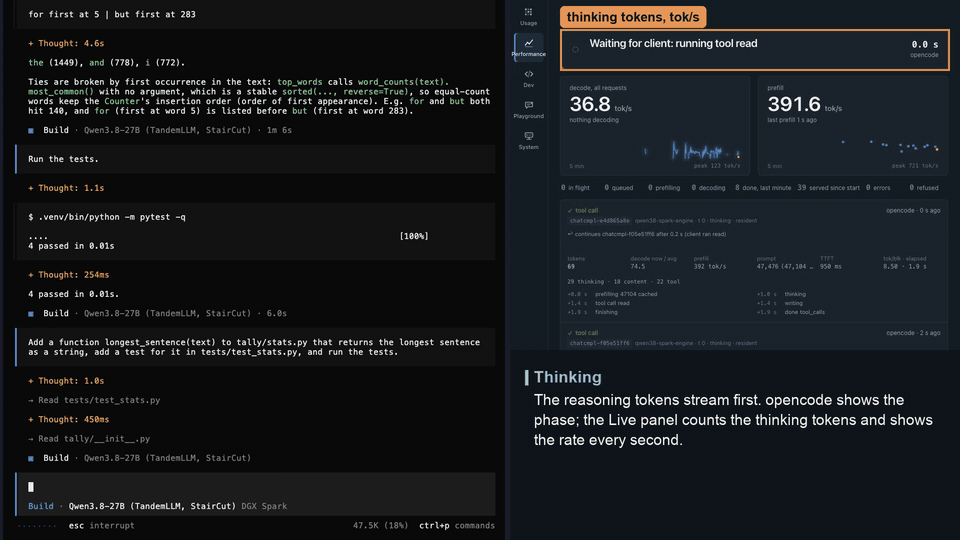
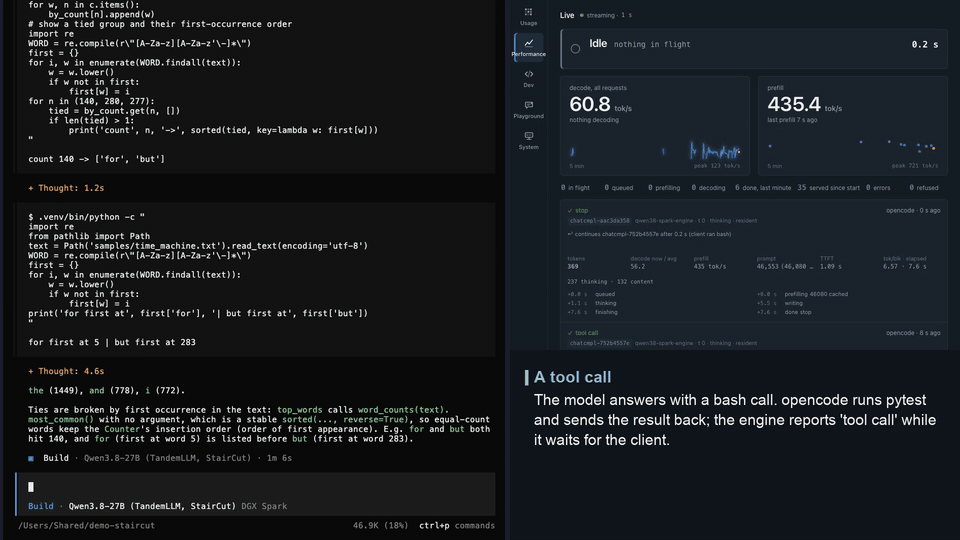

Server and API¶
server/app.py speaks the OpenAI HTTP API, so any OpenAI client can use the engine by changing its base URL. It is built on the Python standard library (ThreadingHTTPServer), with no web framework. This page covers the routes and the request fields, then tool calls and structured outputs, then how the service behaves under load.
Routes¶
| route | who may call it | what |
|---|---|---|
POST /v1/chat/completions |
anyone | chat, streamed or not |
POST /v1/completions |
anyone | plain text completion |
GET /v1/models |
anyone | the served model name, and TandemLLM when the conductor is on |
GET /v1/replica/identity |
as /v1/models |
what two engines compare before they serve one model as replicas: the code, the model's family and layers, the weights, drafters, rows and tokenizer by content, the decode settings and the window (server/identity.py); 503 identity_pending until it is computed, once after the start |
GET /health |
anyone gets the status; the full body follows the admin rule | status, queue counters, cache report, memory; on a stage process the stage block (below) |
GET /metrics |
the metrics token when one is set, else the admin rule | Prometheus metrics (metrics.md) |
GET /v1/cache/stats |
the admin rule | the caches' counters |
POST /v1/cache/clear |
the admin rule; with a password set, only as a bearer header | empty the caches in RAM; ?tier=disk the disk tier, ?tier=all both |
POST /v1/cache/peek, /v1/cache/prewarm |
the admin rule | a chat body's warm tokens and their tier before it is sent; the conversation read back from the NVMe while the engine is idle (caches.md) |
/v1/dashboard/* |
anyone by default; with a password set and --dashboard-login on, the admin token or a dashboard session |
the engine's own reads: live activity, the system, the log, parallel requests, usage and the request rows (the contract) |
/v1/engine/* |
the admin rule | the engine-only screens: the residency plan, the disk tier, the decision models, the narrator and the shadow reader (the contract) |
GET, PATCH /v1/engine/settings |
reads as /v1/dashboard/*; a change from this box, with the HTTP token or the admin token |
the settings a running engine changes without a restart, today QSE_ALLOW_FROM: a change is a new overlay version, applied at once (engine API 1.9) |
POST /v1/systemone, /v1/predict |
the admin rule | typed decisions from the engine's own decision models (below); only with QWEN38_DECIDER_MODELS set |
GET /readyz |
anyone | whether a decision model is loaded and warm; only with QWEN38_DECIDER_MODELS set |
/v1/conductor/*, /v1/library*, /v1/laya*, /v1/memory*, /dashboard/ |
reads as /v1/dashboard/*, writes and every memory route the admin rule, the library and Laya anyone |
the extension's routes in chat mode (below); a headless engine answers 404 not_on_engine, and /dashboard/ 404 no_ui |
The admin rule¶
The admin password is the admin token, QSE_ADMIN_TOKEN in secrets.env (mode 600, never in the repository). It is the one switch, and by default it is not set.
- With no password set, the default, every route in the table answers anyone who reaches the port: the dashboard reads, the engine-only screens, the disk tier, the decision models, both cache routes and the full
/health, and in chat mode the extension's writes and memory. Keep the server on a trusted network: anyone on it can read and change the configuration and the memory. Only/metricskeeps its own token whenQSE_METRICS_TOKENis set, for Prometheus. - With a password set, the admin routes need the admin token as a bearer header or a dashboard session.
POST /v1/cache/cleartakes only the bearer header. Requests from the box itself (loopback, no proxy headers) need no token; the watchdog and the measurement tools depend on that. A bad password stops the start: it must be at least 32 characters.
The HTTP token and the allow-from list (engine API 1.9)¶
Before any route, the server checks two things that are off by default (server/api/access.py):
- With the tree's
run/http-token(made bytandem remote token rotate, which answers the token over SSH and keeps only its sha256 here), every caller that is not on this box needsAuthorization: Bearer <token>, inference included. Calls from the box itself (loopback, no proxy headers) need none./healthgives its status without it; with it, the full body follows the admin rule as before;/healthz,/v1/health,/readyzand/metrics/upanswer too. The admin token passes as well. A rotation counts within a second. QSE_ALLOW_FROM(addresses and CIDRs): any other address gets 403 on every route; loopback always passes. It changes live throughPATCH /v1/engine/settings.
With neither, the server answers as before. remote-control.md has the details.
The dashboard login (--dashboard-login, from QSE_DASHBOARD_LOGIN, off by default) matters only with a password set: then on makes /v1/dashboard/* need the token or a session too. With no password it changes nothing. Failed logins are throttled per client: a fronting proxy's X-Real-IP is believed only when the TCP peer is loopback (a proxy on this box) or names itself in TANDEM_TRUSTED_PROXY — the LAN shape, where every real client shares the one peer; any other peer is keyed as itself (server/api/auth.py). The proxy must set X-Real-IP itself (proxy_set_header X-Real-IP $remote_addr; in nginx): a proxy that passes the client's own header on lets the client pick its bucket. TandemApp's dashboard.md says what the page shows.
What the API supports¶
server/compat.py gives every OpenAI request field one of three answers, and tests/test_compat.py pins the table.
- Honoured:
messages,model,stream,stream_options,max_tokens,max_completion_tokens,stop,temperature,top_p,seed,presence_penalty,frequency_penalty,logit_bias,logprobs,top_logprobs(up to 20),n(up to 16, not streamed),tools,tool_choice,parallel_tool_calls,reasoning_effort,response_format,modalities(text output only). Messages may carryimage_urlparts (see Images below). - Accepted and without effect by their own definition:
user,metadata,store,service_tier,prompt_cache_key,safety_identifier,prediction. - Refused with a 400 that names the field:
audio,functions,function_call(usetools),web_search_options,verbosity, and for completionssuffixandecho.
Fields that are not OpenAI's pass through without a 400, because clients send extensions meant for other servers. The engine reads its own: top_k, min_p, repetition_penalty, no_repeat_ngram_size, max_reasoning_tokens, reasoning_format, draft_temperature, chat_template_kwargs and cache_prompt, and the other servers' thinking-budget shapes (reasoning, thinking, thinking_budget, enable_thinking and more, see Thinking budgets from the client).
cache_prompt¶
The prompt caches are on for every request (caches.md). A request that leaves out cache_prompt, or sends true, resumes from the longest prefix a cache holds, and timings.cache_n counts the tokens it reused. Any other value but false does the same.
cache_prompt: false reads the whole prompt: timings.cache_n is 0 and timings.prompt_n is the prompt's length. A benchmark that measures a cold prompt read sends it. The request also leaves every prompt cache as it was. It reads and writes no state-store entry, no disk-tier anchor and no end anchor, and the response cache neither answers it nor keeps its answer. A conversation already in place is set aside as for another client's. A prompt of up to RESIDENT_GUEST_MAX tokens (8,192 served) and under a quarter of that conversation runs as a guest, and the conversation's rows go back after it. A longer prompt parks the conversation, or writes it to the NVMe when the park cannot hold it. Its next request without the flag then finds it where it would have found it before. Nothing parks or keeps the rows a cold request wrote, since they belong to no conversation. One store stays on: the suffix store is the lookup's memory of text, not a prompt cache, and takes the request's tokens as it does for every request.
Reasoning¶
The model thinks inside <think> tags. --reasoning-format (or reasoning_format in the request) picks how the thinking reaches the client:
| value | content | reasoning_content |
|---|---|---|
tags (default) |
thinking inside <think>...</think>, then the answer |
empty |
reasoning_content |
the answer only | the thinking, as OpenAI-style deltas |
both |
as tags |
as reasoning_content |
A client kind can have its own format when it names none and the server's is tags, under a conductor plan (QWEN38_CLIENT_REASONING, kind=format,..., * for every kind not named; default *=reasoning_content,hermes=tags; empty: tags for every client). On the raw path the same rule holds for a plain API client, an SDK, curl or an unnamed one such as a benchmark: the reasoning goes to reasoning_content and its stop strings read the answer alone. Every other kind keeps the server's format there (SRV-617; up to 0.11.4 every raw request kept it). Since 0.3.50-test every client but the Hermes agent gets reasoning_content by default: an OpenAI SDK or curl client printed message.content and showed the model's thinking as its answer, and opencode with the installer's provider config showed it as literal <think> text (SRV-245, SRV-219). A client that wants the tags inline sends reasoning_format: tags. The answer starts with its first character; the blank lines the template writes after </think> are not sent. A small max_tokens counts the thinking: a response cut inside it has finish_reason: length, an empty content and the reasoning in reasoning_content.
Under a conductor plan a request's stop strings apply to the answer, never inside the reasoning, and the blank lines that start the answer are not matched (0.3.50-test, SRV-245: stop: ["\n\n"] ended a response at the first blank line of the thinking, 55 tokens and no answer). The raw path matches them on the whole text, as the release did. State lines never go into a plain API client's content (curl, an OpenAI SDK, an unnamed client): they go to reasoning_content, or are left out with tags; a memory line still goes into the answer. Open WebUI 0.11.3 folds <think> blocks out of the content after the fact and forwards the piece that carries </think> to its live view as the text of a new message, where it stays until the round's stream ends; in reasoning_content it has no tag to show, and every tool round's reasoning is its own block. For that client the template's blank lines go out as one content piece where the reasoning ends, so Open WebUI closes and times each round's block even when the round goes straight to a tool call (a blank message is not shown). A request's own reasoning_format always wins (0.3.45-test, SRV-193).
Open WebUI's terminal tools end run_command's description with the terminal's working directory (The current working directory is: <path>), which Open WebUI fetches again for every user message. The description sits in the system prompt's tool block, about 4,800 tokens into the prompt, so the first cd of an agent changed the prompt there and the next user message read the whole conversation again: 41,749 tokens, 56 s, live on 0.3.46-test, where the conversation's own rows matched only up to that line. Under a conductor plan that is on (0.3.47-test, SRV-209, QWEN38_CLIENT_CWD, default note), the sentence leaves the description and the same sentence goes into the turn as a router note, when the directory differs from the last one noted (the first turn, a cd, a cd back): the tool block stays the same for the whole session, and the note replays where it was put, like every router note. The model reads the same words, at the turn they became true. Shadow, off, raw and QWEN38_CLIENT_CWD=off: the tools as sent.

Recorded against the served engine (published NVFP4 weights, StairCut on); sped-up parts are marked in the clip.
The chat template opens the block in the prompt, so the model only ever writes </think>. Our server re-emits <think> as the first delta so that clients which fold on a matched pair see one. reasoning_effort (low, medium, xhigh) goes into the chat template, and the served default is medium. At xhigh, one request spent all 8,192 of its tokens thinking and never answered. --reasoning-effort none (or off, SRV-477) turns thinking off for every request that says nothing about thinking (no switch, effort word or budget in any shape): such a request gets chat_template_kwargs.enable_thinking: false before anything reads it, and one that says anything keeps it. /health then reports reasoning_effort: off and sampling.thinking_default: off.
Thinking budgets from the client¶
A client may cap the thinking in any of the shapes clients send, and server/api/thinking.py reads them all into one budget:
| shape | sent by | read as |
|---|---|---|
max_reasoning_tokens, thinking_budget |
this engine, DashScope | a cap in tokens |
chat_template_kwargs.thinking_budget, .max_thinking_tokens, .reasoning_budget, .thinking_token_budget |
template-argument clients | a cap in tokens |
reasoning: {max_tokens, effort, enabled, exclude} |
OpenRouter-style clients | max_tokens a cap, effort a word, enabled: true alone medium, enabled: false off |
thinking: {type, budget_tokens} |
Anthropic-style clients | enabled with budget_tokens a cap, enabled or adaptive alone on without a cap, disabled off |
reasoning_budget, max_thinking_tokens, thinking_token_budget, thinking_budget_tokens (top level) |
other servers' clients | a cap in tokens |
reasoning_effort, reasoning.effort, chat_template_kwargs.reasoning_effort |
OpenAI SDK, opencode, Hermes agent | the effort level's cap: minimal and low 1,024, medium 8,192, high 16,384, xhigh and max none; none is thinking off |
enable_thinking: false (top level or in chat_template_kwargs) |
DashScope, template-argument clients | thinking off |
Precedence: whether the model thinks is decided first, by chat_template_kwargs.enable_thinking when it is set, else by the top-level enable_thinking, else by any off form. The cap is then the first number in the table's order, else the first effort word's cap (chat_template_kwargs before reasoning_effort before reasoning.effort), else enabled: true or a thinking.type. A number beats a word. 0 is no cap. A word the template knows (low, medium, xhigh; minimal renders as low, max as xhigh) also goes into the template; high leaves the template at the server's default and is the cap alone. Before this, high, none, minimal and max reached the template, which raises on them, and the request got a 500. An unknown word or a negative number is a 400 that names the field. reasoning.exclude is read and not honoured: the reasoning goes out in the request's reasoning_format.
Under TandemLLM's router, a client's number always wins. An effort word is a ceiling (0.3.22-test, decided 2026-10-03): where the router decides the effort (decisions.effort: on), the turn gets the router's level, but never a cap above the word's (medium holds an xhigh turn to 8,192 reasoning tokens; a low class under medium keeps its 1,024). The answer reserve still applies after. The journal row's extra.client_word says when the word held the router down. A profile's thinking.client_word (ceiling, the default, or ignore) decides it per client: the shipped coding and overnight profiles say ignore, because opencode sends medium on every turn whatever the user picked, and there the router's level alone is the turn's, as before. enabled: true without a word yields to the router. Elsewhere (the raw engine, X-Tandem: raw, a profile with the effort decision off or in shadow) the word is the cap.
Thinking off is the client's (0.3.40-test). none and every other off form (enable_thinking: false, reasoning.enabled: false, thinking.type: disabled) close the thinking block in the template under every profile, the ceiling rule's lowest word. The router's journal row then says thinking: off_client with no budget, and extra.client_thinking names the field and the class's level that did not run ("client turned thinking off"); the dashboard reads "thinking off (client)". The class's effort sentence ("Reasoning effort is set to xhigh. Please think carefully …") is not added to such a turn (effort_note_skipped:client_off in the row's notes); the rest of the note (a package's rules, the class's rules) still is. Before, the row read thinking: on at the class's level and the prompt carried the xhigh sentence into a turn that could not think (Open WebUI's agent model sent reasoning_effort: "none", 2026-10-06).
The answer reserve: when a client asked for a budget in any shape and the reasoning would otherwise run into the output limit (max_tokens, max_completion_tokens, or the server's default), the reasoning closes early enough to leave the answer --answer-reserve tokens after the closing phrase (QSE_ANSWER_RESERVE; auto, the default, is min(2,048, a quarter of the limit); 0 turns it off). The phrase is counted in because it streams where no monitor hides it. An uncapped request gets the limit less the reserve and the phrase as its cap. The close is the session monitor's hidden one where a monitor acts (SP1: the vendor's phrase goes into the model's context, the client receives </think> and the answer; the journal's CLOSE_REASONING has task client, or reserve when the reserve lowered the cap), and ThinkBudget's streamed phrase otherwise (no monitor, shadow, X-Tandem: raw, n > 1). The server log has one [think] <id> client budget ... line per such request, and with the router its journal row has extra.client_budget (field, kind, asked, reserve, limit, cap). usage.completion_tokens_details.reasoning_tokens counts the visible reasoning through </think>, the streamed phrase included and the hidden one not.
A request with none of these fields is served as before, token for token: the template gets the same arguments and the loop the same budget. enable_thinking alone asks for no budget.
| thinking: {type, budget_tokens} | enabled with budget_tokens a cap, enabled or adaptive alone on without a cap, disabled off |
| reasoning_budget, max_thinking_tokens, thinking_token_budget, thinking_budget_tokens | a cap in tokens |
| reasoning_effort, reasoning.effort, chat_template_kwargs.reasoning_effort | the level's cap: minimal and low 1,024, medium 8,192, high 16,384, xhigh and max none; none is thinking off |
| enable_thinking: false (top level or in chat_template_kwargs) | thinking off |
Tool calls¶
The request's tools go into the chat template, and the model answers a call in its own XML form:
<tool_call>
<function=read>
<parameter=offset>
150
</parameter>
</function>
</tool_call>

Recorded against the served engine (published NVFP4 weights, StairCut on); sped-up parts are marked in the clip.
server/api/toolcall.py turns that into OpenAI tool_calls with finish_reason: "tool_calls", on both the streamed and the JSON path. Under a conductor plan a request that offered no tools never gets tool_calls: a call the model writes anyway is read out of the answer and dropped, the finish stays stop, and the journal row names it in extra.calls_refused (0.3.50-test, SRV-247: a curl client with memory on received the model's own memory search as a call to a tool named tool, with the session's share address in its arguments). It reads the strict form, a lenient form and a JSON call object, and it reads only the answer, never the thinking. On a stream, a call goes out as argument deltas while the model writes it: the id and the name first, then each string value in pieces. A whole-file write therefore shows progress instead of minutes of silence.
Argument values carry their schema's types. The model writes every value as text, so offset arrives as the characters 150. Our parser looks up the request's own schema, and a parameter whose schema does not allow a string is returned as JSON: 150, true, a list. A typed value is held back on the stream until it is complete, then sent whole. On an 8-task agent run, a strict client that validates arguments against the schema refused 58 of 80 calls before this change, and 0 of 26 after.
tool_choice works as OpenAI defines it. none renders the prompt without tools. required and a named function become a constraint on the answer, the same token masks structured outputs use, so the model cannot answer without the call. parallel_tool_calls: false keeps one call. Beside a response_format, auto is the calls or the document (Structured outputs below).
Structured outputs¶
response_format with json_object or json_schema, and structured_outputs with a regex, a choice list or a JSON schema, constrain the answer to a regular language. engine/grammar.py compiles each form to a finite automaton over bytes, because the tokenizer is byte-level and a token can end halfway through a character. A token is allowed in a state when walking its bytes never reaches the dead state. The engine computes that for the whole vocabulary at once per state and caches it, so a state costs a few milliseconds once.
A </think> the model writes again in its answer, alone on a line, is not sent (0.3.43-test, SRV-187): Open WebUI's parser closes a reasoning block at the first </think> and showed the second one as the text </think> between two tool rows. The tag in a sentence, in inline code, in a fenced code block, inside a <tool_call> or a <tandem_memory> block, or closing a <think> line the answer opened itself, stays; the stream holds back at most the start of a line that can still become the tag. Only under a conductor profile: the raw path sends what the model wrote. The journal row counts the tags taken out (extra.stray_close).
The constraint applies to the answer, after the reasoning. A JSON answer (json_object, json_schema) is parsed whole by its client, so a request that names no reasoning_format gets reasoning_content for it: the thinking goes to reasoning_content and message.content (or the concatenated content deltas) is the JSON alone, which json.loads and the SDKs' structured-output helpers read as they are. A client that sends reasoning_format: tags (or both) keeps <think>...</think> in the content. Such a request also gets the answer reserve a client's own thinking budget gets (see Thinking budgets from the client): the reasoning is closed early enough to leave the JSON its share of max_tokens (the journal's extra.json_reserve), and it carries no state lines. Until 0.3.41-test the content opened with the think block and a small max_tokens could end inside the JSON (SRV-169: a 270-token think block, then finish_reason: length at 300).
With tools offered and tool_choice auto, a document (json_schema, json_object, a structured_outputs form) constrains the answer to the calls or the document alone (SRV-619): one automaton, the union of the tool-call language that required uses (any offered function, its required parameters in declared order, typed values; more than one call unless parallel_tool_calls: false) and the document's. The model thinks freely, then its own first answer token picks the branch: the automaton is the product of the two languages, and where both are still open the mask follows the row's argmax before the mask. A call's first token (the <tool_call> id, <) commits to the calls; any other token (the document's {, a code fence, prose, the end token) commits to the document; whitespace leaves the choice open. The plain union let the masked-out fence's next best token decide, and that was the call marker, not {: on a first live run the model said "I can just output the JSON directly" and then answered with a run_code call that built the JSON (TC-65). Prose and code fences are outside the language. The mask stays a function of the prefix and the target's row, so speculation changes no token. The log line [structured] <id> branch=calls|document and the journal's extra.structured_branch say which branch an answer took. The call markers keep the model's own ids under this constraint (<tool_call> is one token; spelled out byte by byte it is off the model's distribution). A call goes out as tool_calls, the document as the content, with the thinking in reasoning_content as above. tool_choice: none is the document alone; required and a named function are the calls alone, the document checked and left out. An agent loop that asks for its final answer as JSON with its tools still attached (the OpenAI SDKs' structured-output helpers, tool-eval-bench's structured scenarios) was a 400 through 0.11.4 (structured outputs with tools are not supported) and fell back to prompt-only JSON, fenced or with prose around it. A model whose calls are not the XML format (--tool-format pythonic) keeps the 400.
Each mask applies to every verified row of a draft tree, not only to one row per step. Constrained output under speculation is therefore the text plain constrained decoding writes, with the same near-tie exception as any greedy text (exactness.md). JSON schemas with recursion ($ref cycles) are refused, and json_object allows a fixed nesting depth.
An extension can ask for the same constraints (engine-ext-v1 3.2, SET_CONSTRAINT at the request's safe point): a regex, a choice list, a JSON schema or a logit bias, carried out by this grammar as the request field it is the same as (structured_outputs or logit_bias), so the act's answer is that field's answer token for token, under speculation too. The request's own constraint wins over the extension's. A constraint the engine cannot carry out leaves the request unconstrained, unless the extension marked it strict: then the client gets a 400 that names SET_CONSTRAINT. contracts/engine-ext-v1 has the rules.
Streaming¶
A streamed response sends one chunk per token, carries usage on the last chunk when the client asks for it (stream_options.include_usage, and by default with --usage-default on), then a chunk with finish_reason and data: [DONE]. A verify round accepts several tokens at once, so they reach the socket together. Half the gaps between tokens are therefore microseconds, and the other half a whole round.
By default, usage counts what the client sent and what it received. prompt_tokens is the client's messages (with its tools) as the chat template renders them; the conductor's notes (the router's note for the turn, the session's replayed notes, the closed think block of a turn it turned thinking off, the monitor's SP4 note, an earlier answer's hidden tokens put back) are not in it, and when there are any prompt_tokens_details.hidden_tokens says how many the model read besides (absent when none, so a raw request's usage has its old shape). cached_tokens is the client's tokens served from a cache: the cached span less the hidden tokens inside it, which the server tracks by position (the notes, the end anchor's replay, a reasoning the client left out, SP4's note); when the positions are not known it is at most prompt_tokens, as before. timings.cache_n and prompt_n stay the engine's own counts of the whole prompt, and the ledger keeps them as engine_cached and forwarded_tokens (schema 8). Until 0.3.50-test the hidden rows inside the cached span counted as client tokens: an opencode turn that re-read 3,827 of its 24,706 client tokens reported all 24,706 cached (SRV-233); it now reports 20,879. The ledger keeps the client's count in prompt_tokens and the conductor's in conductor_hidden_tokens. Until 0.3.41-test the router's notes were counted: a "hi" reported 238 prompt tokens under the chat profile (926 on 0.3.39-test), 11 raw (SRV-165).
--usage-context engine (or QSE_USAGE_CONTEXT=engine) makes usage.prompt_tokens count the occupied prompt after replay, alignment and image expansion, including retained reasoning and injected notes. Use it for clients that trigger context compaction from the API's prompt-token count: reasoning the client leaves out can otherwise fill the context while the reported count remains below the client's threshold. prompt_tokens_details.cached_tokens then counts the engine's cached rows, bounded by the occupied prompt, and total_tokens is that prompt plus completion_tokens. When the count differs, prompt_tokens_details.client_tokens carries the default client count and client_cached_tokens its cached share, the client mode's cached_tokens; chatd reads that pair, so the Context panel's warm and cold add up to the client prompt. hidden_tokens keeps its existing meaning. The default is --usage-context client. Both modes keep the ledger, usage.tandem breakdown and timings on their existing accounting basis; generation and cache replay are unchanged.
Speed and draft fields: timings and metrics¶
Every response carries two objects beside usage, with the engine's own counts of the request. A response without a stream has them in its body. A stream has them in one chunk only, the one that carries usage: the finish chunk when the client sends no stream_options, the separate choices: [] chunk with include_usage: true, and none with include_usage: false or --usage-default off. metrics.md has an example with consistent numbers.
| field | what it is |
|---|---|
timings.cache_n |
prompt tokens restored from a cache |
timings.prompt_n, prompt_ms, prompt_per_second |
prompt tokens forwarded, and the time from the engine lock to the first token |
timings.predicted_n |
tokens the engine committed, the end token included (completion_tokens) |
timings.predicted_ms, predicted_per_second |
the first token to the last, and (predicted_n - 1) / predicted_ms |
timings.blocks |
decode forwards: each verify round is one block, and so is a plain step without a draft |
timings.tokens_per_block |
(completion_tokens - 1) / blocks |
timings.draft_n, draft_n_accepted |
drafted tokens the verify checked, and those it kept |
timings.reasoning_n |
committed tokens of the reasoning block |
timings.ttft_ms, queue_ms, total_ms |
arrival to the first token, arrival to the engine lock, arrival to the end |
metrics.speculative_decoding.mean_acceptance_length |
the same number as tokens_per_block |
metrics.speculative_decoding.draft_acceptance_rate |
draft_n_accepted / draft_n, to four decimals |
A block commits the drafted tokens the verify kept plus one token the verify decides itself. tokens_per_block counts that token too, so 1.0 means no drafted token was kept, and a round that kept 4 drafted tokens counts 5. The first token comes from the prefill, which is why both speeds subtract 1. As an example, a response with completion_tokens 412, blocks 90, draft_n 1,350 and draft_n_accepted 322 has a mean accepted length of 411 / 90 = 4.57 and an acceptance rate of 322 / 1350 = 0.2385.
finish_reason is one of stop (end of text or a stop string), length (max_tokens), tool_calls, timeout (the request's wall-clock cap), or error. On error the partial text has already been sent and an error object sits beside the finish reason. A client that hung up is logged as abandoned, not as an error.
server/stream.py turns tokens into characters. A character can span tokens, because the tokenizer works on bytes, and a stream that sent every decoded prefix would send a replacement character (U+FFFD) that never goes away. Our detokenizer holds back a trailing partial character until the next token completes it. Every character it sends is final.
A long prefill, and a client that leaves¶
A long prompt prefills for minutes: 208.3 s at 128k tokens on the published NVFP4 set (caches.md). After every prefill chunk the handler checks its socket. If the client has gone, the prefill stops there, the request ends abandoned, and the engine is free at once. Rows already prefilled stay in the resident prefix (caches.md), so a retry continues from there. A request whose client left while it waited in the queue is dropped before it runs.
A streamed prefill that has run for 5 s (--prefill-heartbeat-s) also sends an SSE comment after each chunk, at most once a second:
: prefill 12288/95131
Clients ignore comment lines. Proxies see a live stream and do not time it out.
Admission and limits¶
With one sequence (QSE_PARALLEL=1; the shipped profile runs 8 lanes, parallel-requests.md) requests wait for it in a bounded queue.
| limit | served value | what happens |
|---|---|---|
--max-queue |
8 | the next request gets a 503 with Retry-After: 5 |
--queue-timeout |
240 s | a request without a stream that waited that long gets a 429 with Retry-After: 10; a streamed chat request and a client's side request wait as long as --request-timeout (see "A turn behind a running turn") |
--request-timeout |
3,600 s | a generation that runs that long ends with finish_reason: "timeout" |
--max-len |
262,144 tokens | a prompt that does not fit gets a 400; max_tokens is clamped to what fits |
--default-max-tokens |
32,768; 131,072 on Ornith | used when the request sends no max_tokens; a request's own max_tokens wins |
QSE_MAX_BODY_MB |
512 MiB | a body that promises more is a 413 before its first byte is read; a chunked body hits the same line as it passes it (server/api/http_body.py) |
QSE_HANDLER_TIMEOUT_S |
60 s | a client that stalls inside the request body gets a 408 and the connection closes; a stall in the request line or the headers closes the connection with no answer; an answer the client stops reading ends there, logged as abandoned, and the connection closes; the clock restarts at every socket op that makes progress, as nginx's *_read_timeout |
At load the server allocates the KV buffer for the whole context, so the context length is a memory decision taken before the first request (operations.md).
The answer limit is DEFAULT_MAX_TOKENS. ops/serve.env sets 32,768, and a weight profile sets its own where the model's card names another number: Ornith's card names 131,072 new tokens, so its profile sets 131,072. /v1/models shows the running value as tandem.max_output. setup.md says how to change it.
The memory gate (OPS-47) runs before every prefill: back under the ceiling, then the prompt's workspace under the declared peak, shedding caches cheapest first (store, anchors, end, stash, park, pin, and since 0.3.26-test roles), or a 503 with Retry-After. The store gives back only what the gate needs plus 256 MiB, in chunks, plain entries oldest first and the snapshots at a prompt head's mark last (SPD-249): a chunk whose bytes stay in the allocator's cache (the reserve falls by less than half of them) ends the store's shed and the gate goes on to the next level, and the heads go after a chunk that lowered the reserve, when nothing else is left in the store, or when the chunks before them were under 256 MiB (too small to show what the reserve does), and only when what the store still holds can cover what the gate still needs (else they stay and the next level goes). On 2026-10-04 it refused every request, 12-token ones included, at "needs 82.0 GiB, peak 77.0 GiB", until :8000 was restarted at 16:41. The cause was the shadow reader's model pool: it had read 123,000 rows of a 195,694-token conversation, and every KV growth and every chunk's attention temporaries (larger with each chunk, as the context grows) took a new segment of its own MemPool. A live MemPool never gives its free segments back (torch 2.13, measured: 556 MiB stayed reserved after every tensor in it was freed; empty_cache returned it only once the pool was deleted), so 17.6 GiB of free memory sat in it and counted as the engine's reserve. Now:
- After each idle-window burst, a shadow pool with more than
QWEN38_SHADOW_POOL_SLACK_GIB(2) free parks its sessions on the disk and unloads the model, which drops the pool; the next turn loads it again and reads on from the disk. rolesis the gate's last level: the same release, thenempty_cache.- Before a refusal the gate runs
gc.collect()andempty_cacheonce more. A prompt whose workspace fits in the free reserve of the engine's own allocator (free memory inside a role's pool does not count) is admitted (stale_admitin the memory events): the allocator serves it from blocks it already holds. - Every refusal is an error line in the Dev tab's log, with allocated, reserved and how many refusals in a row.
The abandoned 195,694-token prefill was not the cause: the log shows the shadow's ten reading bursts after it, and the first refusal right after them.
Since 0.15.1 (2026-11-02, SRV-773) the gate charges a prefill the workspace of the rows it forwards, not of its whole context. Where the prompt resumes in place (the end anchor, the last prompt's end, the anchors) gives the rows, and the model's adapter prices them (CostModel.workspace_rows); a family without that model keeps the line through workspace_per_token, and a cold prompt is never charged under the line. On Flash-Next a resumed turn of 21 rows took 0.10 GiB at every context from 8k to 146k tokens, where the line charged 2.75 to 10.39 GiB: on 2026-11-02 slot 0's gate refused a 21-token follow-up at 62,886 tokens ten times. The [req] line shows fwd= (the rows forwarded) beside ws_rows= and ws_gib= (what the gate charged); QSE_REQ_PEAK=1 adds peak_gib=, the allocator's peak over a request that ran alone.
With --parallel N the gate runs for every slot, side slots too, on the live reserve, before the admission reserves the request's bytes (SRV-775). On a side slot it runs the peak stage only; the ceiling stage, which walks the allocator's pools, stays slot 0's. A prefill no reserve could ever take (the engine's load plus its workspace over the peak) gets its 503 at once. One the gate still refuses after shedding waits while another prefill runs, and runs alone over the peak when none does, counted: /health memory.over_peak_admits, over_peak_slot and over_peak_gib (the reserve over the peak now), a [memory] over_peak_admit log line. QSE_PEAK_STRICT=1 makes a lone request wait too. The admission checks a lone request against its floor as well (parallel.admission.lone_checked); it caps the cache growth and the workspaces in flight at the engine's room to its peak, and a request admitted over the peak counts its workspace past that room, in full less the allocator's free default-pool blocks it takes before any new memory (Budget.workspace_spare), so the floor bounds it. Its line then names the part that is new memory, for example "this request over the peak 1.6 new (2.3 of its 3.9 in the allocator's free blocks)".
flowchart LR
due["prefill due:<br/>workspace estimated"] --> l1["state store"] --> l2["body anchors"] --> l3["end anchor"] --> l4["guest stash"] --> l5["parked session"] --> l6["pinned head"] --> l7["roles' pools"]
l7 -- still over --> r503["503 + Retry-After"]
l1 -. "fits under the peak" .-> run["the prefill runs"]Cheapest first; each level only while the prompt's workspace does not fit.
The memory gate before every prefill. Each level is given back only while the prompt's workspace does not fit under the declared peak (77 GiB); a cache given back costs a later cold read, never a different token.
The side lane (0.3.27-test)¶
A short request no longer waits for a long turn to end. On 2026-10-04 between 16:43 and 16:48 one opencode turn thought for minutes. A second session's first turn queued behind it and got a 429 after 256 s, twice. Before queueing, the router asked Qwen its two questions for that turn (the package and the library choice, TandemApp's tandemapp/conductor/classify.py): both waited in the same queue and gave up at their 8 s timeout, so the ledger shows them as abandoned after 9.0 s, client anon, model qwen38-spark-engine.
A request goes to the side lane (server/preempt.py) when it finds the engine busy and is short: at most --side-lane-prompt-max (2,048) prompt tokens and --side-lane-new-max (64) output tokens, one choice, no images, thinking off, and either a raw request (the router's questions are raw) or a client's side request (opencode's or Hermes' title). It becomes a job, and the generation that holds the engine serves it at its next safe point: between two decode blocks, or between two prefill chunks (--side-lane decode leaves the prefill out, off turns the lane off). The guest is prefilled from position 0 on the prefill's grid and decoded one token a forward, with no drafter. Its answer is plain greedy decoding of its prompt (or the client's sampling), so it follows the exactness promise (exactness.md).
The generation gets the engine back as it was. engine/cache.py Borrow copies what the guest can write: the KV rows below the guest's prompt plus its output plus 64, the recurrent state, the convolution tails, a walked chain state in its scratch buffer, and the references the next block reads (a pending commit is copied unsettled, so the next verify folds the same record into the same bytes). The drafter is never touched: the guest runs without one and with the drafter's tap off. A copy costs about 0.3 GB for a 2,000-token guest and is freed after it. tests/test_side_lane.py checks on the random model that the next block's logits, the state and every KV row are bit for bit an uninterrupted run's, after a guest between blocks, after a partial accept and between prefill chunks; tools/lane_check.py checks a long request on the real engine against runs without guests: its tokens are the runs' tokens up to the first fork, and a fork must be a near tie, each run taking the other's runner-up with a top-2 gap within --tie-nats (0.125), as exactness.md judges one.
Three guards. A job waits for a later safe point when the engine's reserved memory plus the guest's copy and workspace would pass the declared peak (a long prefill near its peak). A disk-tier write that has not copied the rows below the guest yet stops where it is (DiskTier.guard_rows); the head's chunks are copied seconds after a prefill, so during a decode nothing stops. A job no holder takes (the turn ended, or the lock is held outside a generation) is run by its own request thread under the lock, at the side rank, with the resident rows lent and given back the same way.
The ledger row of such a request has lane (decode, prefill or self); its queue_ms is the wait for the safe point. The [req] line adds lane=, wait_ms= and lent_ms= (how long the turn waited). Side-lane rows are not speed samples: a short plain decode beside a turn says nothing about the engine's decode rate. A client's side request too long for the lane (opencode's summary) is never refused for its wait: it waits as long as a request may run.
sequenceDiagram
participant G as guests
participant L as long turn
participant S as second turn
Note over L: prefill chunks
G->>L: title request, served between two chunks
Note over L: decode blocks
G->>L: router question, served between two blocks
S-->>S: arrives and waits in the queue
Note over S: the stream opens after 10 s, a waiting line every 10 s
L-->>S: the turn ends, the second turn runsThe scheduler. A long turn holds the engine. Short guests (a title request, the router's own question) are served at the turn's next safe point and the turn gets its state back bit for bit. A second full turn waits in the queue; its stream opens after 10 s and carries a comment every 10 s.
A turn behind a running turn (2026-10-05)¶
The side lane serves short requests only. A second session's full turn still waits for the running turn to end, and until 0.3.31 it got a 429 after --queue-timeout (240 s), as on 2026-10-04 at 16:47: minutes of waiting, then a refusal, then the same again.
A streamed chat request is no longer refused for its wait. It waits as long as one request may run (--request-timeout, 3600 s on :8000). After 10 s in the queue its stream opens (status 200, the headers) and an SSE comment goes out every 10 s: : waiting, position 1, about 40 s, 30 s so far. A comment is not an event, so no client reads it as a token, and a client or proxy with an idle-read timeout keeps the connection. When the profile shows progress lines, the waiting line carries the estimate: "waiting: another request is running, position 1, about 40 s" (kind queue_eta, switched with queue; the voice says "about 40 s left"). A new line goes out when the reason or the position changes, and once a minute otherwise. A request that has waited less than 2 s gets no line (queue_wait.QUIET_S). When TandemLLM's own work holds the engine the line says so in plain words ("TandemLLM finishes its background work first", "TandemLLM decides how to handle the request first"); the live view keeps the technical holder. That work (the shadow reader's burst, a summary prepared ahead) yields at its next chunk, so its estimate is the median of the waits requests really had behind it, longer than the wait so far, and there is none before five were measured; below 10 s an estimate reads in seconds ("about 3 s"). Each request's time behind that work is the ledger's wait_own_ms (schema version 5). Until 0.3.41-test such a holder counted 0 s and every estimate was rounded up to 10 s, so the line read "about 10 s left" every time while the ledger's waits were 0.1 to 3 s (SRV-177). At the limit the open stream ends with an error object (code 429) beside finish_reason: "error", as any refusal after an early open does. A request without a stream cannot show that it is alive, so it keeps --queue-timeout and its 429. A full queue (--max-queue) is still refused at once with a 503.
The estimate (server/queue_wait.py) comes from the hold times of the requests since the start, per rank (a turn, a side request). For the request that holds the engine, having run e seconds, it is the median of d - e over the recorded times d longer than e: how much longer requests that ran this long went on. Each waiter ahead adds its rank's median; the prepare and shadow jobs yield at their next chunk and add nothing. With fewer than 5 recorded times, or fewer than 3 that ran longer than the holder has, the line gives no estimate, only the position. The numbers are rounded (10 s steps, then minutes) so they do not read as exact.
The holder's own work (0.3.51-test, SRV-249). The hold times know nothing about where the holder is: on 0.3.48-test a one-line question waited 35.8 s behind a thinking turn that had run 14.8 s, and the line said "about 20 s". Replayed over the box's ledger (3,716 client requests, the waiter arriving at 10, 25, 50, 75 and 90 % of each hold), the hold-time estimate was a median 0.52 of the real wait for waits of 10 to 60 s (78 % of them under it) and 0.17 for waits over a minute. When the handler sees the holder (queue_wait.Live: its prefill marks, the tokens it has written and its decode rate, whether it thinks, its max_tokens), the estimate is the prefill it still has to read at its live rate plus the tokens it still has to write at its own rate: the 75th percentile of what earlier requests of the same kind (thinking or not) wrote past the tokens it has written, never more than its max_tokens allows (before its first token, at the median rate of the earlier ones). In the same replay that is a median 1.06 of the real wait for 10 to 60 s (42 % under) and 0.59 over a minute; waits under 10 s read about twice their length, at most one line. Without that view, or with too few finished requests of its kind, the hold times stay.
Not done in the single-sequence server: interleaving two full turns. --parallel N (below) serves them at once instead. The engine holds one sequence; serving a second turn between the first one's blocks means a prefill of its whole prompt (tens of thousands of tokens) and a copy of every KV row it can reach, each time it gets a slice. The side lane's Borrow does that for a 2,048-token guest (about 0.3 GB, seconds); for a full turn it would cost more than it saves and would hold two conversations' state in memory at once. The client is told how long the wait is instead.
Parallel requests (0.3.38-test, --parallel N, off by default)¶
How to turn it on, what it costs and what was measured: parallel-requests.md. This section is how it works.
--parallel N (QSE_PARALLEL in ops/serve.env; unset or 1 is the server above, one sequence) builds N - 1 side slots beside the engine (server/slots.py). A slot is one sequence's complete state over the one copy of the weights: a Qwen38Engine with its own KV, recurrent state, verify scratch and verify graphs, and its own drafter stack over the same drafter checkpoints (their weights are shared), reading the same lookup corpus and suffix store. Slot 0 is the engine as it always was: the 262,144-token window, the resident prefix, the disk tier, the spill and the side lane. A side slot has slot 0's window (--side-max-len 0, SRV-707; a shorter value is kept) and none of slot 0's caches; it shares the state store.
Which slot a request gets. A request queues for slot 0 the way it always did (the ranks above). While it waits, it takes a free side slot when its prompt plus max_tokens plus a margin (64 tokens, 8,192 more when the conductor shapes the request, for its note and package) fits the side slot's window (a request with images counts each image's rows, SRV-629), it is not a side-lane guest, and it does not continue slot 0's resident conversation (the next turn of that conversation waits for slot 0 and resumes there in place; on a side slot it would prefill its whole conversation again). A request on a side slot sees its slot's engine, drafter, window and per-request values through the same STATE the handler always reads (SlotState), so it is served by the same code: the conductor, the monitor, tool calls, structured outputs, streaming.
The GPU turn. Every slot's GPU work runs in its turns (Turn): a request offers the turn back before every decode block and after every prefill chunk, and it is handed to a waiting slot that is one quantum (--turn-quantum-ms, 50) behind in GPU time, as Linux's CFS shares a CPU. Whoever holds the engine lock (a request on slot 0, the summary prepared ahead, the shadow reader, a decision model's batch) holds the turn as slot 0, so nothing that runs under the engine lock runs beside a side slot's work, a CUDA graph capture included. Before the turn changes hands the device is synchronized (--parallel-settle on), so the length routers' timings hold only their own slot's work.
Lockstep rounds. While two or more slots decode, their draft calls run as one packed draft (--parallel-draft on, engine/drafters/draft_graph.py packed_draft: the drafter's projections and the head once over every slot's block, from CUDA graphs per set of drafters; slots on different drafter arms draft apart), and each one then submits its tree and waits; the last one to submit runs one verify pass for all of them (engine/model.py forward_tree_multi): every projection (the MLP, the head, the recurrent and attention layers' input and output projections) runs once over all the slots' rows, so the weights are read once; the convolutions, recurrences, attention over each slot's own KV, the norms and the commits stay each slot's own. Each slot's tree is cut to its share first, best nodes first with their ancestors (16 nodes at 2 slots, 10 at 3, 8 at 4), so a joint pass stays at or under 32 rows, where every projection kernel's result for a row does not depend on its neighbours (kernels.md). A chain-shaped block keeps its chain kernel and verifies alone in the round. When the turn has been idle for --batch-timeout-ms (2) with blocks waiting, the round runs without a slot that is not drafting (a forced close, a single-token step). A slot that decodes alone never waits and verifies with its own graphs, so one request at a time takes the path it takes without --parallel. The length router is not told a joint pass's time (it would learn a cost no lone block pays).
Admission by bytes. Before a request prefills, its worst case is reserved: its prefill's workspace (the memory policy's estimate for its length, at least 1.15 GiB). It waits, in one-second slices with its turn given up, while MemAvailable less what the caches may still grow into, the other requests' reservations and its own would fall under --parallel-floor-gb (15); after --queue-timeout without a stream, or QSE_MEM_WAIT_S (3 h) with one, it gets a 503 (parallel-requests.md). That sum is capped by the engine's room to --mem-peak-gib: every cache asks the memory policy before it grows and every prefill, a side slot's too, passes the policy's gate, which keeps the reservation plus that prefill's workspace under the peak, so the engine as a whole never takes more than that room. The state store's snapshot is one of those caches, so it is no longer part of each request's need. Until 0.3.50-test a request counted the workspace floor plus a whole store entry (2.1 GiB for 576 tokens) against 6.4 to 8.4 GiB of cache budgets: at the box's idle MemAvailable (about 27 GiB) a 576-token title request waited 63 and 83 s beside a 9,000-token one (SRV-250). The wait is queue time: the ledger's queue_ms holds it and wait_mem_ms names it, prompt_ms starts at the admission; the client gets a waiting line ("waiting: memory for a second request, N GiB short, position 1"); the log says waits for memory and admitted after N s, and a request with nothing else in flight admitted alone. Since 0.15.1 a request with nothing else in flight is checked against the floor too (SRV-775), and the engine's memory policy (OPS-47) still gates it. A side slot is built at start only when the same floor holds with its bytes added: about 104 KiB a token of window and 7.5 GiB beyond it, most of that the pools of its 121 verify graphs (measured 6.9 to 7.5 GiB for an 8,192-token slot). The memory policy's ceiling and peak go up by what the side slots took, so slot 0's caches are not shed for them.
What it shows. /health and the dashboard's System page carry parallel (the slots, the turn, the rounds by size, the admission) only when side slots exist; the Parallel view shows each engine lane's slot and the engine's slots with what each does and the passes they shared. The [req] line and the ledger rows are the request's own.
The text. Each request writes what it writes alone up to a near tie: a joint round verifies the request's tree cut to its share, a different tree shape than the one it verifies alone, and the shape of the verified tree can move a near tie (exactness.md). The rows of a batched projection are the bits they are alone (checked on the box: tools/parallel_verify_check.py, CPU: tests/test_parallel_verify.py).
Limits of phase A: side slots were text only (they read images since SRV-629); the side lane serves only slot 0's safe points; a side slot does not resume from slot 0's resident prefix (it resumes from the state store); the joint pass runs without CUDA graphs; each slot's accept, commit and stream run one after the other on the host, and socket writes happen while the turn is held. A side slot captures its verify graphs at their first use (--side-precapture off), so its build takes seconds.
Timing (QSE_PARALLEL_TIMING=1, for measurements: every joint pass is synchronized and timed): /health's parallel.meeting carries, per number of slots decoding, a slot's round (round_ms, submit to submit), its draft (draft_ms), its work after the verify (post_ms), the verify as it sees it (verify_wait_ms) and the joint pass's GPU time by blocks (pass_ms), and its tokens a round (accept: joint<N> or alone). tools/parallel_bench.py reads them per window.
One model as two stage processes¶
--stage LO:HI starts the server as one of the two stage processes of a split model (ENG-307, architecture.md). It serves the layers [LO, HI) of --model: 0:k is the front stage, k:layers the tail. Built for the lfm2_moe and qwen4_exp (Flash-Next) families.
| flag | what |
|---|---|
--stage LO:HI |
the layer range this process serves |
--link-listen IP:PORT |
wait for the other stage on this address |
--link-peer IP:PORT |
connect to the other stage at this address |
--link-key-file PATH |
the key both stages share |
--stage-graphs on\|off |
Flash-Next: a stage captures its own decode, verify and commit graphs (on, the default) or runs every pass eager |
--stage-caches on\|off |
Flash-Next: keep state on both stages under one key: the prompt caches, the disk tier and side slots (off, the default: one sequence, nothing kept) |
--stage-snapshots-gb G |
the front, with --stage-caches on: memory for the states it keeps, a slot (2) |
--stage-cache-dir PATH |
the front, with --stage-caches on: the folder for its half of what the tail's disk tier keeps |
--stage-cache-gb G |
the front: that folder's size (32) |
Each side takes one of --link-listen and --link-peer. Addresses are IP literals, and a wildcard address is refused. The key file must be a regular file of the server's user, mode 0600, with at least 32 bytes. The key appears in no log line, message or route.
The tail is the engine clients talk to. It serves the chat and completion routes, and its GET /v1/replica/identity names its range in stage. The front loads its layers and answers /health; every other route answers 409 stage_front. Start the front first: the tail waits 120 s for the link, then refuses to start. Stop the tail first (its planned stop drains the disk tier's writer), then the front. A link whose two ends differ in key, code, weights, family, layer range, caches (--stage-caches) or slots (--parallel) is refused with the reason (auth, code, weights, family, stage, caches, slots): a tail at its start refuses to start and says it, a running tail's /health says it in stage.link.reason while it keeps trying, and the front logs it and shows it in its own stage.link.reason.
A front with --stage-caches on checks the box before any weight is read: MemAvailable must cover its weights, its attention layers' rows and its sections for every slot (from the pack's headers), --stage-snapshots-gb for every slot and the floor (--parallel-floor-gb), and the filesystem of --stage-cache-dir must hold --stage-cache-gb (its free space and the files already in it). Otherwise it refuses with the figures. A front never takes --disk-cache: the disk tier is the tail's, and the front's half goes to --stage-cache-dir.
Limits, each refused at the start or at the request, never served another way:
- without
--stage-caches on: one slot (--parallel 1), no disk tier, no prompt caches; - no KV pool, no conductor, no backends, not in setup mode; the session spill is off;
- text only: a request with images gets 400
stage_text_only; LFM2_KV_FP8andFN_KV_FP8are not served split;- LFM2 MoE's passes run eager, without captured graphs, and it keeps no state split (
--stage-caches onis refused).
Flash-Next as two stages (engine/models/flashnext/stages.py, tail.py):
- The tail holds the last layers, the final mixer, the head, the draft layer and the sampler. The draft layer and its graphs are the one process's.
- The carry is the 4 streams and the next site's norm of them in bf16: 40,960 bytes a row at hidden 2,560. In front of the PLE layer it is the streams alone, 20,480 bytes a row.
- The stage that holds the PLE layer reads the n-gram table. The other stage opens the file and reads no row of it.
- Each stage reads the embedding, the head and the final mixer beside its own layers.
- A prompt runs chunk-major, one chunk of
FN_PREFILL_CHUNKrows a round. The layer-major window and the joint prefill are off. - The tail loads no vision tower.
/healthlists these limits understage.options.
Flash-Next with --stage-caches on (both stages take the flag):
- The tail runs the server's caches as the one process does: the resident prefix with all it keeps (the end anchor, the pin, the park, the stash), the state store, and the disk tier with
--disk-cache. They hold the tail's half of a state. - The front keeps its half under the same key. The key is a digest of the blocks that wrote the state, computed on each stage from what it ran. The front's rows stay where they are until a pass would write over them; then they are copied out, within
--stage-snapshots-gb. - A state the caches put back whose front half is gone is rebuilt on the front alone: the tail sends its log of blocks again, each as the kind of block it was, and runs none of its own rows again. The tokens are the same; the cost is the front's share of a prefill.
- With
--stage-cache-dirthe front writes its half of every state the tail's disk tier keeps. After both stages start again a disk hit needs both halves; without the front's file the entry is given up and the prompt runs cold. --parallel N(up to 8): each slot is a stage engine of its own over the one copy of the weights, on both stages. The blocks of a joint round cross the link as one request and one carry; on each stage every slot's block then runs on its own engine. A side slot's window is--side-max-len, at most slot 0's.- When the link comes back the tail keeps its sequence. The front starts empty and is brought back from its own kept states, or from the tail's log, at the next request.
/healthaddsstage.state: on the tail the snapshots, restores, rebuilds and joint rounds; on the front each slot's kept states and bytes.- Not served: images, the session spill, the layer-major window and the joint prefill. A joint round runs each slot's block on its own, so a round of N slots reads the weights N times.
/health on both stages carries a stage block (below). While the link is down the tail's status is degraded. A request in flight ends with an error that says stage_down, and a new one gets 503 stage_down with Retry-After: 5. The tail keeps dialing or listening. Without --stage-caches on a new link starts both stages empty under the next epoch, so the next request reads its prompt again.
The stage block¶
A server that is not a stage has no stage key in /health. A stage's full /health answer carries this block on both sides, every field present (shape 1; a field added later is optional):
| field | type | what |
|---|---|---|
shape |
int | the block's version: 1 |
role |
front | tail |
which stage |
lo, hi |
int | the layer range [lo, hi) |
range |
string | the same as LO:HI |
layers |
int | the model's layers |
cut |
int | hi on the front, lo on the tail |
identity |
string | null | this stage's handshake identity block by content (16 hex digits); null on the tail before its first link |
options |
object | the limits the stage serves with (stage_options: slots, caches, graphs, kv_cache, images, prefill_chunk, max_len, carry, and with caches on snapshots_gb, cache_dir (set or none), cache_dir_gb, joint_round) |
link.state |
up | down |
|
link.epoch |
int | counts the links; 0 before the first |
link.reason |
string | null | null while up; else why: no peer yet, refused (<reason>), timeout, closed, ... |
link.transport |
string | null | tcp; null before the first link |
link.bytes |
object | null | tx, rx of the current link; null before the first |
link.peer |
object | null | the other stage of the last link: role, lo, hi, identity (equal to the other stage's own identity); null before the first link |
steps |
int | the front: carries sent |
state |
object | with --stage-caches on only: the tail's counters (chunks, steps, trees, rounds, round_blocks, round_max, snapshots, restore_hits, restore_misses, quiet_steps, drops, marks, rebuilds, replays, slots) or the front's (snapshots, restores, restore_misses, quiet_steps, rounds, and slots: each slot's store report) |
tools/stage_cut_cost.py measures what the cut costs by itself on one device: the same blocks through the whole model and through front, host copy and tail, in one process with no link. A run reads its blocks once before the clock starts, changes which arm goes first every run, and times the uncut arm a second time; baseline.clean says whether that second pass is within 2 % of the first.
Qwen3.8-Flash-Next (SRV-87)¶
--model <an EXL3 pack of Qwen3.8-Flash-Next> serves Flash-Next through this same server. It picks the model by the checkpoint's own config (engine/models, qwen4_exp), and server/app.py's loop drives it through an adapter in the 27B's engine interface (engine/models/flashnext/serving.py). Every route is this server's own code, and so are the reasoning split and the think budget, tool calls and grammar masks, penalties and logit_bias, logprobs, seeds, stop strings and pattern stops, the live view and the usage rows.
Speculation is the pack's MTP layer as a tree drafter: StairCut over a 4-deep chain through the hot draft head (QWEN38_FN_DRAFT_HOT), with the lookup in the same tree (QWEN38_FN_LOOKUP=1 in the profiles), gated by the load-time self-check. A sampled request walks the greedy tree (--sampled-tree det is implied). A verified row is the decode step's row bit for bit, so greedy and seeded answers are the plain-decode answers token for token (tools/fn_server_check.py --compare of a --drafter none and a --drafter mtp server: 19 of 20 requests the same; the 20th, a think budget at low effort, closes at a block boundary).
Its caches are the 27B's (ENG-157): the resident prefix with its end anchor and its pinned and parked anchors, the state store, the disk tier and the session spill, on Flash-Next's grid of 4,096 tokens (its prefill chunk, caps.anchor_grid). A disk tier and a spill need a folder of their own per profile, since a file of another fingerprint is swept. Since ENG-241 the KV pool (--kv-pool on) and side slots (--parallel N) work on Flash-Next too, and its profiles turn them on: three slots over one engine, each answer its single-stream answer (parallel-requests.md). Flash-Next reads images (VIS-97): the pack's own vision tower on the EXL3 kernels, the image rows and their three-axis rotary positions in the prompt, through the image path below; its profiles run with VISION=on, and a pack whose files hold no tower (the 4.05 branch keeps it in vision_k6.safetensors, which the reader takes) starts with vision off and says so. On 3.05 the image chats answered the same with the MTP drafter and without (5 of 5: two single-image chats, a two-image chat of 2,089 prompt tokens and a second turn from the caches), and a text-only answer is the same with the tower loaded and without. Against transformers' Qwen4ExpVisionModel on the dequantised weights the tower's outputs sit within the official model's own BF16 noise (0.048 to 0.090 from the fp32 model, against 0.046 to 0.104). In the language model the text rows after an image keep the text's own agreement (KL 0.019 after 140 image rows and 0.0025 after 2,184 with the sparse attention on, top-1 97.9 %; the text floor 0.022), and every verify pick equals the decode (tools/fn_vision_check.py, VIS-97). Not yet on Flash-Next: the conductor's shadow reader, which is validated on the 27B's reasoning only.
Nothing in the server branches on the model (ENG-E8). One loader serves both models (_load, SRV-341): the model's builder brings its weights and engine with the tokenizer and the drafter, and the engine's caps say what it cannot hold yet. Both models share the walk down a verified block (engine/methods/walk.py). What the dashboard and the caches ask of an engine goes through the adapter's verbs: cost() (the snapshot bytes, cache.snapshot_cost on /health), cache_state(), settle(), discard_pending(), trim_pending(n). For the 27B, engine/models/qwen3_5/adapter.py installs them on its class, so engine/model.py keeps its bytes. Flash-Next's package builds its own engine and drafter for the loader (serving.serve, named by its registry entry: the pack, the hot draft head, the self-check), and /health's weights names the pack, its MTP drafter, the load time and the self-check.
Images¶
A user, assistant or tool message may carry {"type": "image_url", "image_url": {"url": ...}} parts, where the URL is https:// or data:image/...;base64,. The server fetches and decodes them before the request queues and runs the checkpoint's own image processor (preprocessor_config.json: 16-pixel patches, 2 × 2 merge, 65,536 to 16,777,216 pixels). The chat template writes one placeholder per image and the server expands it to one prompt row per merged patch: a 640 × 480 image is 300 rows, and those rows count as prompt tokens in usage. The vision tower (27 blocks, 0.92 GB, BF16 as the checkpoint stores it) runs inside the prefill, when the first chunk that holds the image runs; the live view reads "Encoding image 1 of 2" while it does.
A bad image is a 400 that names the part, for example messages[1].content[0].image_url: a scheme other than https or data, a download that fails, broken base64, a body in none of the five formats it reads (PNG, JPEG, WEBP, GIF, BMP), more than --image-max-mb (20), a header that declares more than --image-max-decode-pixels (64 million), more than --max-images (16) in the newest message, images in the newest message that together take more than --max-image-rows (65,536) prompt rows (earlier messages' images over either cap are left out instead, below), an image in a system message, a video part, and any image when the server runs with --vision off. --image-act-gb (6) is the admission check: an image whose encode would need more memory than that, by the tower's byte math, is refused before it queues; the largest image the processor admits needs about 3.4 GiB. A waiting request keeps its images' patches on the host in the tower's dtype (BF16, 12 KiB a prompt row), so the row cap also bounds what a full queue holds.
An https URL is a request the server makes for the client, so it is fenced. The host must resolve to public addresses only: loopback, private, link-local, shared (100.64/10), multicast and reserved ranges are refused, including IPv4 addresses inside IPv6. The connection goes to the address that was checked, with the certificate checked against the host name, so a second DNS answer cannot move it. A redirect is followed only to another https URL that passes the same check, at most 3 times. A URL with credentials in it is refused. --image-fetch-timeout (15 s) covers the whole download, redirects included. --image-https-private on lets URLs reach private addresses, for a server that should read images from its own network; --image-https off accepts data: URLs only.
A long conversation is not refused for the images it has gathered. A coding agent that reads a screenshot every few turns sends every earlier image again on every turn, so once it had read 17 the 17-image request was a 400 and so was every request after it: the session could never continue (opencode, 2026-10-03, 17 images; the limit is 16 a request on messages[210]). Since 0.3.21-test, when the images are over --max-images or --max-image-rows and the excess is in earlier messages, the oldest images are left out and the request is served. A left-out image is never fetched or decoded, and in the prompt it is the text [an earlier image was left out: TandemLLM keeps the newest 16 images of a conversation] in place of its placeholder, so no placeholder token is left without an image (the router, the session monitor and the transcripts still read the messages as the client sent them; only the rendered prompt changes). Images go in steps of half the cap (8 at the default), counted from the conversation's start: at 17 images the oldest 8 go, and the next 7 images change nothing before the prompt, so the prompt's head that the caches resume stays the same for several turns instead of moving at every turn. Over the row cap, the newest message's images are counted first, then the earlier ones newest first; the first that would go over the cap and everything older are left out, rounded up to a whole step. The choice is a function of the message list alone, so the same history always renders the same prompt. The newest message's own images are never left out: if they alone are over a cap, the request is the 400 it was (17 images in the newest message; the limit is 16 a request, naming the first image over). Each request that leaves images out says so: a log line [images] <request id>: left out the oldest 8 of 17 images (counts only, never a URL), the response header X-Tandem-Images-Left-Out: 8, the journal row's extra.images_left_out on a conductor request, and the counter qse_images_left_out_total.
Text requests do not touch any of this: the engine's image state is empty for them and every forward is the text one, bit for bit.
Chat mode: the conductor as an extension¶
A new install runs headless (QSE_MODE=engine): the routes above, under the served model's own name. In chat mode (QSE_MODE=chat) the engine also loads one extension, named by its module in QSE_EXT, through the engine extension interface (contracts/engine-ext-v1, versioned on its own). TandemApp's conductor is that extension. It brings the TandemLLM model and everything that model does with a turn. Its code and its rules are TandemApp's (chat-mode.md).
The engine looks the module up before the weights load. Chat mode without a module it can load refuses to start, and so does a module written against another major version, with one line ([ext] REFUSING: ...). Once the model is loaded, the engine hands the extension its state, the tokenizer and the metrics registry, the ledger's path, and the engine-only screens as calls.
Each request then asks the extension at six points:
| point | what the extension gives back |
|---|---|
| before the request queues | a plan, or none for a request it leaves alone |
| before the prefill | the prompt's token ids |
| at each safe point of the decode loop | an act: close the reasoning, continue hidden, repair or regenerate a call, give up |
| while the answer streams | the lines the stream carries |
| at the end of the turn | follow-up requests the engine schedules after the client's |
| after the ledger row is written | nothing: it writes its own journal rows |
The engine carries out every act itself, so the decode loop stays the engine's. A hook that raises is logged and counted in qse_ext_errors_total. The rest of that request runs as a headless engine would serve it.
The box's mode decides what ops/start.sh starts (OPS-260). QSE_MODE=engine, a new install's default, starts the engine alone, with --conductor raw and none of the small models. QSE_MODE=chat comes from install.sh --with-chat, the Setup Guide's Chat (beta) switch or run/local.env. It sets QSE_EXT=tandemapp.engine_ext and the conductor's directory (QSE_CONDUCTOR_CONFIG), and starts the small models the profile names. Left empty, the mode is chat on a box whose conductor directory exists and engine everywhere else, so an upgrade keeps each box's mode; QSE_CONDUCTOR_CONFIG=off set by hand stays engine only. The last block of ops/serve.env applies the mode after the profile, run/setup.env and run/local.env. chatd is not the engine's: TandemApp's TandemNode runs it.
Raw is a header, not a model name. On a chat box X-Tandem: raw, or the locked profile raw or bench in X-Tandem-Profile, serves the release's path byte for byte for one request. Benchmarks that measure the engine send it, and tools/row3.py --no-server refuses a server that lists TandemLLM (benchmarks.md says which settings a score must name).
The engine dispatches the extension's routes to it: /v1/conductor/*, /v1/library*, /v1/laya* and /v1/memory*, each also under a session address /s/<token>. A headless engine answers them 404 not_on_engine, and /dashboard/ 404 no_ui. /health names the running extension under extensions ([] when headless) and what it loaded under loaded.
Probe snapshots and the probe stage (ENG-181)¶
QWEN38_PROBE_SNAPSHOTS=on (serve.env, off by default; approved 2026-10-01 for the reference box only, 30 days, tool requests only) copies Qwen's own rows at the router's three decision points, for linear probes trained on the CPU (tools/probe_train.py). Only a TandemLLM request that offered tools, with one choice and not a response-cache replay, is covered; raw never (it has no active plan), a chat without tools never. The points: prompt, the row of the last message's last token, the last row the turn shares with the prompt the client sent (the router's note and the thinking splice come after it, so a probe can read it before the router decides); think, every QWEN38_PROBE_EVERY (1,024) reasoning tokens, the mean of the rows the verified block that crossed the line committed; finish, the row that decided an end token (the last one of a turn that ended in tool calls is not kept: that turn claims nothing about being done). Each point is one row per layer the block drafters tap (5, 19, 33, 47, 61 through eng.tap) plus the hidden_post_norm row, 6 × 5,120 values, fp16: 61,440 bytes and a 420-byte index line. Nothing is forwarded for them: the prompt's row is taken in the prefill's chunk hook (or after its last chunk), the others where the loop already holds the forward's rows. On the device a point is a gather, a mean, a cast and one asynchronous copy into a pinned host slot (128 slots, allocated when the ring opens), queued behind the forward on the request's stream; the host never waits. A request takes at most 96 points; a point with no free slot is skipped and counted. X-Tandem-Probe: off takes a request out (tools/probe_measure.py, the live check: the same text and a decode rate within 3 % with and without).
The ring is ~/.qwen38-spark-engine/probe/snapshots/<yyyy-mm-dd>/ (QWEN38_PROBE_DIR; a directory inside a git work tree is refused at start): rows-<weights>-<R>x<H>.f16 (append-only records) and index.jsonl (one line a record: the request id, the router's journal row id, the session, the class, effort and source the router set, the profile and client, the point, its position or reasoning count, the rows' names, the weights key, and the finish reason and tool calls; never a text). A writer thread waits for a request's copies after the request ended, appends them, and journals one row a request (kind = probe, task snapshot: the counts by point and the bytes). A day stops taking records at QWEN38_PROBE_DAY_MB (100 MB, journaled day_cap); day directories older than 30 days go at start and at 04:00 (journaled prune). The weights key is the served weight files' names with their sizes and times; a probe trained on one key is refused on another. The labels are joined later from the journal (tools/probe_train.py fit): the class Qwen decided (its no-think or in-context answer) and the 216-prompt fixture run through the engine (tools/probe_train.py fixture), the D1 loop guard's acts for stuck, the next checker RESULT for done. Night 2's traffic (1,023 TandemLLM requests with tools, 400,229 reasoning tokens, 17 turns that ended without a call) writes 81.1 MB.
The probe stage (classifier.probe_stage in the router document: mode off, shadow or on; file, a probe under ~/.qwen38-spark-engine/probe/probes/ or a full path; accept, 0.9). shadow: the probe answers the request's own prompt snapshot after the request (snapshots on), into the row's extra.probe, and decides nothing. on: where the plan decides under the engine lock (the in-context stage's follow-ups and long prompts) the probe answers first, on a prefill of the turn's prompt up to its insertion point (the turn then resumes at the grid line below it, as after the in-context stage); at or above accept it decides (stage probe, source probe) and the question is not asked, below it the question decides and both stages are journaled. A short first message keeps the decider and gets the probe in shadow. One answer is a GEMV over the standardisation and temperature folded in, 17 us on the box CPU at 6 × 5,120 rows and 9 classes. A probe of other weights, another width or rows the engine does not have is an error stage (probe_weights, probe_dim, probe_rows), never an answer.
Decision models (stage A)¶
The engine can serve decision models itself (engine/decision/, ENG-179 and SRV-131): models that answer typed questions over a state in one forward pass with calibrated probabilities, choice (one of N options), score (an expected level) and noul (a probability that a statement holds). Laya's three checkpoints (convaiinnovations/laya, Apache-2.0) are the first: laya-english (ModernBERT-large, 512 tokens of state and question, 192 for the question), laya-multilingual (mmBERT-base, 1,024 and 256) and laya-typed-decisions (1,024 and 256). QWEN38_DECIDER_MODELS in serve.env names the ones this server serves and QWEN38_DECIDER_DIR where their files are; empty, nothing of it is imported and every route below is absent.
The arithmetic is the Laya SDK's, through transformers' ModernBERT, so the answers are the SDK's (tools/decider_equivalence.py: 0.00 on 22 questions): fp32 parameters, on CUDA the forward under torch.autocast(bf16), on the CPU plain fp32. Nothing is shared with Qwen: each decision model's tensors live in a CUDA memory pool of its own, its forwards run on a stream of its own, and in this stage a forward runs only while no request holds the engine (the lock every completion holds from its prefill to its last token). A completion that arrives during a decision waits at most one decision forward; a question asked while a completion runs waits for it up to its deadline and is dropped after. Callers that arrive together are answered in the same idle window, each with a forward of its own, the forward the SDK runs for that call, so an answer never depends on who else asked; QWEN38_DECIDER_COLLATE=rows collates them into one forward instead (arbiter's way, faster under many callers, and on the GB10 a probability then moved by up to 3.4e-3 with no choice changing).
A model loads through the residency planner (the decider's claim, 3.0 GiB measured with Laya in the engine since 0.11.3, against MemAvailable less the engine's growth to its peak, floor 15 GiB and margin 6 GiB; never during a hold, never beside another load): ops/start.sh asks for the conductor's deciders document's on_start models once the engine is healthy and its page cache is dropped (POST /v1/conductor/deciders/autoload), an on_demand model loads when a question first needs it, and the dashboard (the Conductor view's Deciders screen) loads and unloads them by hand. A model whose forward fails three times in a minute is unloaded and marked failed; the engine serves on.
POST /v1/systemone (and /v1/predict, the same) takes arbiter's Jev request, {state, model?, questions: {id: {type, instructions, criteria?}}, task?, lang?}, and answers {model, answers, usage, routing, latency_ms, path}. model is auto or jev-latest (script and language detection picks the checkpoint), a model's name, or an alias (en, multilingual, typed and others). Errors keep arbiter's body, {"type": "error", "error": {"type", "message"}}: 422 invalid_request_error, 529 overloaded_error, and 503 with Retry-After for warming, loading, refused (the planner said no, with its decision), failed, not_loaded and busy_decoding (X-Decider-Deadline-Ms, 30 s by default, passed while a completion held the engine). X-Decider-Window: in_decode is refused until the low-priority stream and its governor exist (stage C). GET /v1/models keeps data as it is, TandemLLM alone with the conductor on, and lists the decision models beside it under decision_models, so an OpenAI client still sees one chat model (OPS-260: mode and loaded sit beside data too, as in /health: engine or chat, and the conductor, its monitor's mode, the decision models, the narrator, the loaded roles and whether chatd takes a connection, checked at most every 5 s); GET /v1/models/{id} answers a decision model's card, and GET /readyz is 200 once one is loaded and warm. The contract is systemone.schema.json.
Session addresses (0.3.23-test)¶
The model calls the library and Laya with curl or a script from the user's machine, and those calls carry no session id. Every session the router plans therefore gets a 12-character random token, and {tandem_url} in its notes is the request's own address plus /s/<token> (server/api/session_tokens.py: the engine keeps the registry and strips the prefix, the extension's router issues the tokens). The server strips /s/<token> from /v1/library... and /v1/laya... (any other route under it is a 404), names the session in the call's journal row (session_key) and counts its calls (calls in the router's live sessions). An unknown token is served and attributed to nobody. QWEN38_TANDEM_URL (0.3.41-test, SRV-163) sets the address the notes give instead of the request's own (the token path is added to it), for a box whose clients reach it under a name its scripts cannot verify. {tandem_scratch} (SRV-171) is where the testing packages put their logs, the Laya helper, the playtest kit and its log: .tandem in the project by default, which the model adds to .git/info/exclude when it creates it and deletes as its last step before "done", so the deliverable never holds it (QWEN38_TANDEM_SCRATCH names another place; {token} in it is the session token, e.g. /tmp/tandem-{token} for a client without a directory sandbox; opencode asks before any path outside the project and its run mode rejects the request). A state hook (tandem_state, /__state, --dump-state) is scaffolding the model wraps in tandem-test-hook comments and removes before "done" unless the user asked for one, and the model never downloads a runtime or an executable. TandemApp's tools/packages_migrate.py applies these text edits to a box's saved packages document (a new version) and its skill copies. Tokens live 48 h after their last use and are kept in session-tokens.json next to the conductor's documents (0600), so a note already in a conversation keeps working after a restart. A client without a session id is keyed by its head (h:); after a compaction the engine wrote, a new head that carries the first 200 characters of that summary is the same session.
Draining¶
A CUDA context that fails (SRV-671: after a device-side assert every CUDA call of the process fails until it exits) is seen by the request or the background job that met the error, or by /health's own probe (torch.cuda.mem_get_info every 5 s, skipped while a graph capture holds the capture lock). From then on /health answers 500 with status: failed, the error's first line under failed and a sentence under error; qse_up is 0; a completion gets a 503 of type engine_failed with that sentence and Retry-After: 60, without touching the GPU. server/gpu_health.py has the rules; ops/watchdog.sh restarts such an engine.
SIGTERM and SIGINT drain the server. It stops taking work, /health answers draining with a 503, new requests get a 503 with Retry-After: 30, the generation in flight finishes with its last chunk and [DONE], and the process exits 0. ops/stop.sh sends SIGTERM and waits up to 60 s (its first argument) before it kills. From 0.3.22-test the drain then writes the resident conversation and the parked one to the NVMe (engine/spill.py, docs/caches.md "Live conversations on the NVMe"), about 3 s for 130,000 tokens, and the next start reads the resident one back before it serves, so the conversation's next turn resumes at its end anchor instead of reading it again.
Logs and privacy¶
Each request leaves one log line with its token counts, its finish reason and its rate. No line carries the text of a prompt or an answer. --log-content lets exception messages that quote a request into the log, and --log-request-keys logs parameter names and scalar values, never messages. A usage ledger in SQLite, one row per request with counts and timings only, feeds the dashboard. The probe snapshots (off by default) hold activations, never text, on the box only, 30 days.
Sampling and penalties¶
Every sampling field works on every path, speculative ones included, and a seeded request reproduces its text exactly (exactness.md). Penalties apply to every row before sampling. None is set in the served profile, and a client that sends one gets it, with one exception under the conductor.
A sampled request that names no filter (top_p, top_k, min_p) runs with --top-p / --top-k when they were given at start, else with the model card's (SPD-245; Qwen3.8-27B: top_k 20, top_p 0.95), else over the whole vocabulary; /health sampling.unnamed_filters shows which. A sampled request without a seed draws one at admission and takes the keyed walk (QWEN38_FRESH_SEED, auto), the same distribution; /health sampling.unseeded says where it applies (exactness.md).
Regenerate (0.4.4-test, SRV-241): under TandemLLM a regenerate samples, and every other request keeps the greedy default (exactness.md). Open WebUI sends no flag. Its 0.11.4 source (Chat.svelte) shows the shapes:
| client action | what the server receives | here |
|---|---|---|
| Regenerate | the same messages as the request that produced the answer (the new, empty answer is left out) | a regenerate: samples |
| Continue | the messages ending with the partial assistant answer | greedy |
| Regenerate with a suggestion ("Add details") | the old answer and a new user message | greedy (a new instruction) |
| Edit a user message | a new user message with the edited text | greedy |
| a follow-up, a tool round | new messages | greedy |
The match is by session: the conductor's key (c: from X-OpenWebUI-Chat-Id, x-session-id or a body id), or a hash of the conversation's head when there is none. It compares a hash of the non-system messages, so a re-rendered system prompt (a time variable) or a dropped reasoning field does not matter. A regenerate of any earlier answer counts, because Open WebUI can regenerate any answer. A regenerate after Stop counts too. Each session keeps its last 32 answered conversations for 24 hours. The sampling is --regenerate-temperature 0.7, --regenerate-top-p 0.95, --regenerate-top-k 20 (env QWEN38_REGEN_TEMPERATURE, QWEN38_REGEN_TOP_P, QWEN38_REGEN_TOP_K). That is Qwen's recommendation for thinking mode with the temperature 0.1 warmer, plus a fresh seed per attempt. The class, the effort, the notes and the packages are the turn's as before. A client that sends temperature, top_p, top_k, min_p or seed gets exactly what it sent. The row still says the request was a regenerate (client_params). Other clients can send X-Tandem-Regenerate: 1, and X-Tandem-Regenerate: 0 opts one request out. The server log has a [regenerate] line per request. /health sampling.regenerate has the settings and the counts, and the ledger has sampling (regenerate, client, or null for greedy). --regenerate off turns all of this off.
Loop escape (SRV-475, server/api/loopescape.py). Greedy decoding in an agent loop can return to the same call after a result that did not help. Under a profile whose sampling.loop_escape is on (the shipped coding, chat-app, hermes, overnight and chat), a request that offers tools and whose turn ends in a repeat (C3's state: repeats - 1 identical calls with identical results) or a near-repeat (3 calls of one tool with identical results, each earlier call's canonical arguments at least 0.8 similar to the newest's) decodes with the model card's sampling: generation_config.json of the checkpoint, read at the start (Qwen3.8-27B: temperature 1.0, top_p 0.95, top_k 20; without one, the regenerate's settings), with a fresh seed. C3's escape note (escape_texts) goes at the prompt's tail. Waits and user messages break the streak as for C3, and calls with different arguments and the same result are progress; no result text is read. Once the turn no longer ends in a repeat, the session is back on the profile's default. A client that names temperature, top_p, top_k, min_p or seed gets what it sent. sampling.agentic_default: card samples every request that offers tools (shipped: greedy). Raw, bench, side requests, compactions and regenerates are not looked at. The decision row has extra.loop_escape (state on with why, name, since_turn, turn, the sampling and seed; back with since_turn and back_at_turn), the ledger's sampling is loop_escape or card, the usage has tandem.sampling, the log a [loop-escape] line, /health sampling.card and sampling.loop_escape. Sampled requests keep the drafter: the q-aware chain, or with --sampled-tree det the greedy tree walked by drawing the target's token, so the answer follows the target's sampled distribution (exactness.md).
no_repeat_ngram_size is HF's rule for prose sampling: every token that would complete an n-gram already in the conversation pays 4 nats (a finite penalty, never a ban). In code repeated n-grams are the text itself (indentation, ", ", a sprite's pixel row, a tile map's blank row), so under the conductor (0.3.40-test) a client's no_repeat_ngram_size is dropped on the turns of the code classes (code_edit, debug, design_ui, drawing, three_d) and on every turn that offers tools, whose arguments are files. The server's own default (--no-repeat-ngram) stays; the journal row gets extra.penalty_dropped and the log a [penalty] ... dropped line. A raw request (X-Tandem: raw, or no conductor) gets the client's mask as before. Whether the mask caused any particular degeneration has not been measured (no A/B); the rule rests on what the mask does to code.
The tool-argument loop guard (0.3.26-test)¶
On 2026-10-04 at 16:18 Qwen opened a write of a Mario game, wrote 3 KB of it, and then wrote the same 97-character row of a tile map (" + 94 spaces + ",) 12,866 times: 65,536 tokens, 1.26 MB, 327 s at 200 tok/s, until the token limit. The lookup drafter copied the loop (all 31 draft tokens accepted in 2,007 of 2,209 blocks). The call never closed, nothing was written, and the cut text went back into the session's next prompt (157,806 tokens). D1 and D2 watch the reasoning block only.
The guard (server/api/argloop.py) reads the open tool-call block as the stream's ToolCallBuffer holds it, every 64 tokens once the block has 1,024. It fires on either rule:
- periodic: the block's last 1,024 tokens are one unit of at most 4,096 characters repeated at least 6 times, exactly; a unit of 256 characters or more needs only 3 copies over 384 tokens (0.3.40-test). The tail's last 256 characters are looked up in the 4,096 before them; the nearest match gives the period, and one binary search of string compares gives how far back the text stays periodic with it.
- size: the block passed 32,768 tokens and 3 times the longest message of the request (at 3.5 characters a token), and its last 16 KB compress 16 times or more (zlib level 1).
Calibration (tools/argloop_fp.py, every write content and edit new string in the opencode database, 4,748 texts, 517 over 1,024 tokens, the largest 31,137 tokens): none fires. The longest exactly periodic stretch in them is 307 tokens (7.3 repeats); the highest window ratio past 4,096 tokens is 25.4, in a 21,256-token file. On the incident's text the guard fires 2,176 tokens into the block, 1,055 tokens after the loop began (the first 1,121 tokens were the real file). A legit call cut by the token limit in the same database (9,619 tokens, ratio 2.9) does not fire.
When it fires on a held call (a profile whose monitor holds calls: SP3 checks, coding, overnight), the generation stops there, the open block is dropped and nothing of it reaches the client, and the client gets one sentence as content with finish_reason: "stop" ("[TandemLLM stopped the write call after 2,176 tokens: its arguments repeated the same 98-character piece 211 times in a row. Nothing was run or written.]"). Calls the answer held before the block are checked and released as usual. The journal gets A1's GIVE_UP with the verdict; the ledger's stop detail is tool_arg_loop. The session's next request that offers tools carries a hidden note at the prompt's tail (A1's PROMPT_TAIL_NOTE, in place of the session tasks' note for that request): the call was stopped, write the file without the repetition, generate repeated structure with code, and write a large file in parts. A call that streamed live (since 0.3.27-test; the coding profile's tool gate is off, so opencode's calls stream live) has already sent its name and part of its arguments: the generation stops the same way, the rest of the block is never sent as content, and the client keeps a call whose arguments never close. opencode runs it as an invalid tool and answers with the parse error, so the model's next step starts at once, with the note. Without a monitor in mode on the guard only logs ([argloop] ... would stop). --argloop log logs everywhere, --argloop off turns it off.
max_tokens from opencode (65,536) is not capped per tool call: the database's largest legit write is 31,137 tokens and the guard stops a loop within about 2,000 tokens of its start.
Three copies of a long unit (0.3.40-test)¶
On 2026-10-06 at 06:11 an Open WebUI agent chat looped in a write_file call on a 405-character unit (pixel rows of a sprite). The short rule needed 1,024 tokens of it: the call was stopped at 6,400 tokens, 1,087 tokens and 7.3 copies after the loop began. A unit of 256 characters or more now fires at 3 copies over at least 384 tokens. Measured with tools/argloop_fp.py (the served tokenizer, every check as the server makes it):
| before | after | |
|---|---|---|
that call, replayed (--replay, the loop began at token 5,312) |
token 6,336: 1,024 after the start, 6.9 copies | token 5,760: 448 after the start, 3.0 copies |
| synthetic loops after a real head, unit 405 / 600 / 1,000 / 2,000 / 4,000 characters (tokens after the start) | 1,418 / 1,994 / 3,466 / 6,730 / 13,642 | 714 / 1,034 / 1,738 / 3,402 / 6,858 |
| units of 20, 98, 200 characters | 1,034 | 1,034 (the short rule) |
| opencode's legit writes and edits (4,780 texts, 526 over 1,024 tokens) | 0 fire | 0 fire (none has a unit of 256+ characters twice in a row) |
synthetic legit shapes (--synthetic: a 32 × 32 sprite with 10 identical sky rows, 48 rows of pixel runs, two and three identical 16 × 16 frames, a 100 × 60 tile map with 20 blank rows, 12 levels, a table, CSS, a 600-zero buffer) |
1 of 9 fires | 1 of 9 fires |
The one synthetic shape that fires both before and after the change is 600 zeros written out 16 to a line (38 identical lines, 1,058 tokens): a literal block of one line repeated for more than 1,024 tokens is a loop to the guard. Three identical 393-character frames in a row reach 2.7 copies over 353 tokens and do not fire; a fourth identical copy, or a texture whose rows cycle exactly, would. The stop costs the call, not the session: the model gets the note below and writes the repetition as code.
A stopped call sent back, and the retry storm (0.3.40-test)¶
After that stop the client got the sentence and a call whose arguments never closed. Open WebUI's tool loop answered it with a tool error and sent the conversation again, with the stopped call's 6,400 tokens of arguments in the history. The model copied its own loop: the same 6,400 tokens, byte for byte, five times (about 55 s each), the prompt growing from 17,692 to 46,419 tokens, and the A1 note at the prompt's tail changed nothing (thinking was off; the client sent reasoning_effort: "none").
- The history is cut before anything reads it (
server/api/argloop.pycollapse_history). An assistant tool call whose arguments do not parse (a call the guard or the token limit cut while it streamed), or a string value in opencode'sinvalidstand-in, whose tail is periodic (at least 2.5 copies over 512 characters, units up to 8,192 characters since JSON escaping makes them longer), keeps its first 1,500 characters and gets one marker: "[TandemLLM stopped thiswrite_filecall: its arguments repeated one 425-character piece 7 times, beginning "…"; 13,940 characters of the repetition are left out here. The call never ran.]". A call whose arguments parse closed and is never touched. The client's own list is not changed;--argloop offandlogleave the history as sent. The incident's replayed arguments: 15,444 characters, 1,756 kept. - The retry streak comes from the markers after the conversation's last user message (
trailing_stops); a call that ran ends it, a new user message starts over. - The retry's note names the tool and the piece and, after an identical stop, says the same loop came again and the approach must change. It goes at the prompt's tail once per request, as before.
- The router thinks one level up on the retry, at least medium, instead of a tool turn's lower level (
extra.argloop_retry); a client that turned thinking off keeps it off (its word is a ceiling) and the row saysblocked: client turned thinking off. - After two identical stops in a row (same tool, same period) or three stops of one tool, the next request is not generated. A1 journals
GIVE_UP(tool_arg_loop_retries(n)) and the client gets one sentence, finishstop, no call: "[TandemLLM stopped retrying: the last 2 attempts at thewrite_filecall fell into the same loop (one 425-character piece written over and over) and were stopped before anything ran. Nothing more is tried automatically. Ask again with a smaller step, for example: write the file in parts, or generate the repeated rows with a loop, or turn thinking on (this chat has it off).]" A client's tool loop ends on a plain answer. The sentence is served the way a cached answer is, and nothing of it is remembered as the session's state.
tests/test_argloop.py replays the client's loop on the fake engine: five attempts become two generations and the sentence.